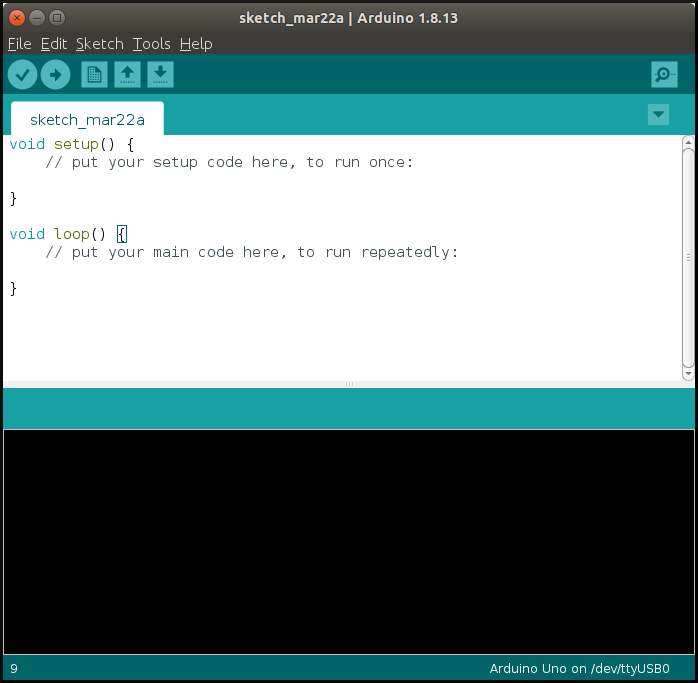
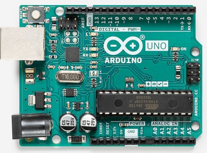
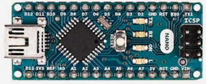
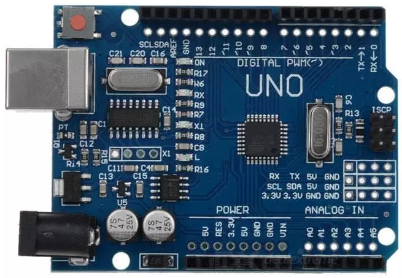
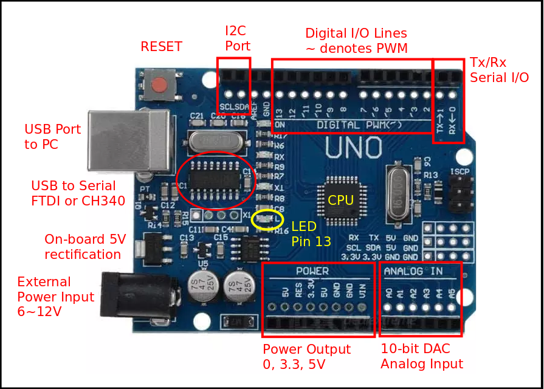
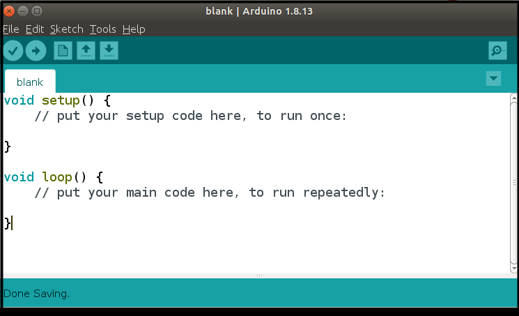
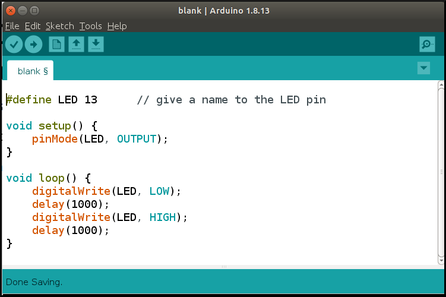
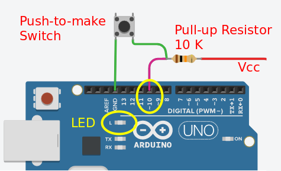

name: default-page layout: true background-image: url("fablabsp_icon_100px.png") background-position: 98% 2% --- class: center, middle # Getting Started with Arduino .footnote[ [Arduino Notes](https://rdorville.github.io/EP1000/arduino/arduinoProgramming.html) ] --- template: default-page layout: false # The Arduino System .left-column[ ## .red.bold[What is it?] ] .right-column[ An IDE (Integrated Development System) + Hardware (Microcontroller boards) - Allows writing of code (C++, Processing) - Compiling, Linking and Execution of code - Obtain feedback from running programs - Use microcontroller boards using the AVR microcontrollers - Extensive libraries for shields and modules ] --- template: default-page layout: false # The Integrated Development Environment .left-column-60[  ] .right-column-35[ - Download from [Arduino Site](https://www.arduino.cc/en/software) - Write, Compile, Execute, Monitor code for the microcontoller - Code is [Processing](https://processing.org/) (C++ like) ] --- template: default-page layout: false # Hardware (Controller boards) .left-column-60[ Arduino Uno<br> Arduino Nano<br> Uno Clone<br> ] .right-column-35[ - Most commonly used board - Uno - Based on the ATMel ATMega328 Microcontroller - Open source circuitry - Cheaper alternatives - China Clones, Other manufacturers - CH340 [USB drivers](https://www.dnatechindia.com/ch340g-drivers-download-installation-guide.html) ] --- template: default-page layout: false # Why use Arduino ? - Inexpensive (clones are less than $5) - Cross platform development (Mac, Linux, Windows) - Simple, clear programming environment using GUI (no need for assembly language) - Open Source - Many libraries to support any development - Can be re-sized (made smaller or larger) - Has equivalent or substitutable systems for other microcontrollers --- template: default-page layout: false # UNO Board Features  --- template: default-page layout: false # UNO Board Features ### Power - Can be powered from USB port (<0.5A) - External power from DC jack 6V ~ 12V - Power outputs: 0 (GND), 3.3V, 5.0V (up to 0.3A), Vref (5V) ### Digital Input/Output pins - Can be configured as Input, Output or Pull-Up Inputs - Has .blue[Pulse-Width-Modulation] on .blue[~] indicated Pins - Built-in LED on Pin13 ### Analog Inputs - 10-bit Analog inputs ### Others - Serial I/O interface - I2C interface - SPI interface --- template: default-page layout: false # Programming - Getting Started  - Saved as .blue[Sketches] (.ino) - Follows most characteristics of C++ programming - Always has 2 functions: - setup() - code only executed .blue.bold[once] - loop() - code continuously loops --- template: default-page layout: false # setup() - Executed only .blue.bold[ONCE] after each powerup or reset of the UNO. - UNO is automatically reset after each successful sketch upload - Contains - initialization code - initialization of variables - setup and configuration of I/O ports - setup of other interfaces ###Tip: Use identifiers to name your I/O pins, it makes programming and code recognition much easier. --- template: default-page layout: false # loop() - The loop() function is executed .blue[after] the setup() code completes. - Loops .blue[infinitely] executing code within the loop() function. - Place your code/program within this function, there is .blue.bold[NO] stopping this code ###Tips: - Arduino code is loosely based on C++ (actually Processing) - Follow good C++ programming habits: - use comments - indent your code - use uppercase to denote constants or defines - name your variables intelligently --- template: default-page layout: false # Digital Input/Output - ATMega328 has 14 digital I/O Pins - labelled pin0 to pin13 - Pin0(Tx), Pin1(Rx) are assigned as Serial I/O - Pin3, Pin5, Pin6, Pin9, Pin10 and Pin11 have PWM functionality - Digital values - 0 (0 V, GND, ON, LOW) - 1 (5 V, Vcc, OFF, HIGH - typically > 3.3 V) - Some pins are .blue[multifunctional], i.e. have different functions depending on how they are initialised. - inputs (default) - inputs with pull-up resistors - outputs - Pulse Width Modulation outputs - Arduino provides .blue[useful library functions] simplifying these operations - pinmode() - initialises the pin - digitalRead() - reads/inputs a digital value - digitalWrite() - outputs a digital value - analogWrite() - outputs a PWM --- template: default-page layout: false # Digital Output ### Let's blink (turn ON/OFF) the on-board LED  - .blue[pinMode()] initialises pin13 to be an .blue[OUTPUT] pin - .blue[digitalWrite()] outputs a 0 or a 1 alternately - delay of 1 second to allow us to view the result --- template: default-page layout: false # Using an External LED ### Let's blink an external LED <img src="external_led.png" style="width:450px"> Use [TinkerCAD](https://www.tinkercad.com/) to simulate! - need to .blue[WIRE-up] the circuit - requires a .blue[current-limiting] resistor - change the pin to .blue[8] - Compile, Upload, Execute! --- template: default-page layout: false # Input with a Pushbutton Switch ### Let's display status of the switch .left-column-50[  - Using on-board LED (pin13) as output. - Switch is connected to pin10 - Requires a 10K pull-up resistor ] .right-column-50[ ```cpp #define LED 13 #define SW 10 void setup(){ pinMode(LED, OUTPUT); pinMode(SW, INPUT); } void loop(){ int state = digitalRead(SW); if (state == HIGH){ digitalWrite(LED, HIGH); } else { digitalWrite(LED, LOW); } delay(200); } ``` ] ### Input is .blue[more] complicated than this example. --- class: center, middle # .red[Breakpoint]